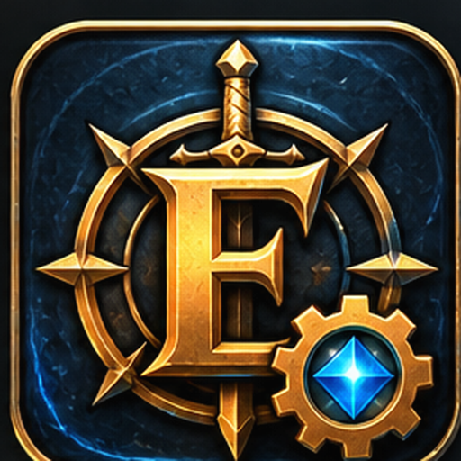
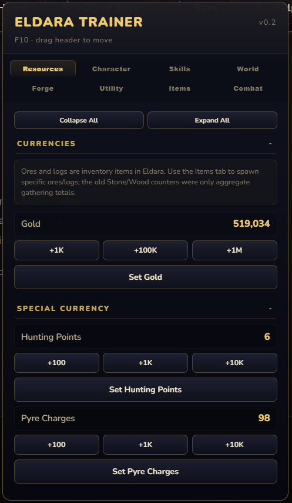
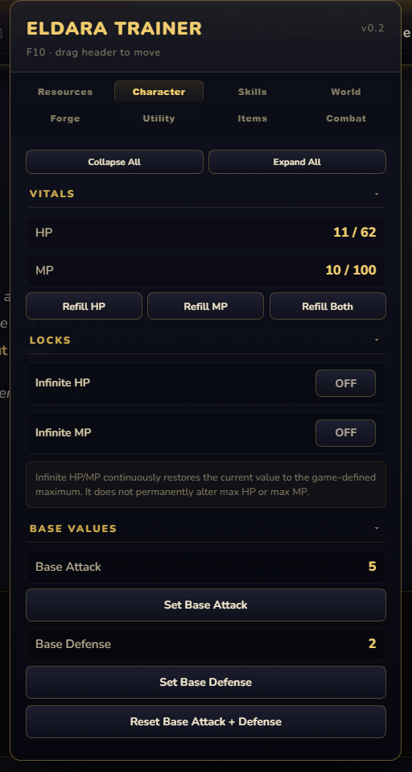
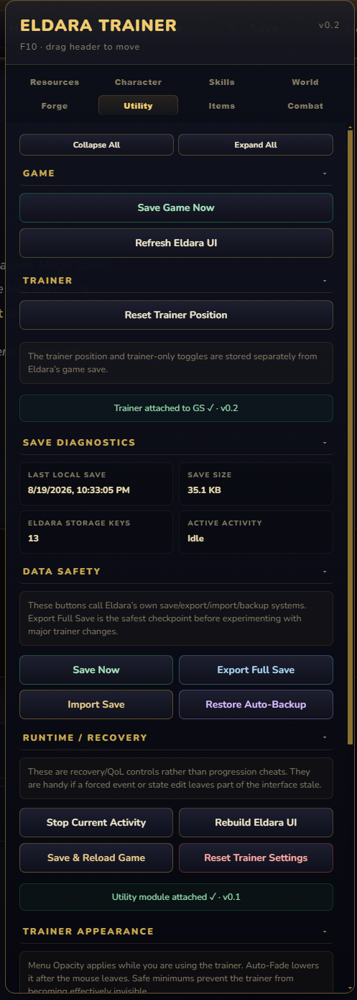

PROJECT / GAME TOOL

Eldara Trainer
A custom trainer and quality-of-life tool for Eldara, built with a proper interface, persistent controls, and enough polish to avoid looking like it escaped from a sketchy forum attachment.

ACTUAL SOFTWARE. SOMEHOW.
Screenshots


WHAT IT DOES
Features
Resource controls
Quick controls for gold, special currencies, and other inventory-related values.
Character controls
Vitals, infinite HP/MP toggles, base attack and defense editing, and reset controls.
Save & recovery tools
Save diagnostics, full-save export/import, auto-backup restore, UI rebuilding, and recovery controls.
Clean in-game interface
A draggable, organized trainer panel with categorized controls, collapsible sections, and persistent trainer settings.
INSTALLATION
How to use it
- 1
Download the trainer
Grab the current v0.2 Windows executable below.
- 2
Keep it with your Eldara setup
Store the trainer somewhere convenient with your Eldara files.
- 3
Launch and play
Run the trainer and use F10 to access its interface while playing.
WHY THIS EXISTS
Origin story
This started after a bad experience with a sketchy trainer download. Instead of trusting random binaries, the obvious response was to make a cleaner one from scratch.
Then the interface got nicer. Then it got more features. Then it got an icon. At that point it had officially become a project.
CHANGELOG
Current release
The current drawer specimen
Expanded categorized controls, UI polish, save diagnostics, recovery tools, persistence, and the bundled desktop trainer workflow.
DOWNLOAD
Get the trainer
Eldara Trainer v0.2
Windows executable · 0.3 MB
ed0a51d6ce4cbea57f36de44a69023d5e3d488174fecec01bf6ce5ad33f41441
Verify the checksum after downloading if you want to confirm the file matches this release.